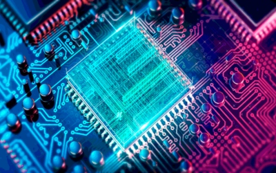
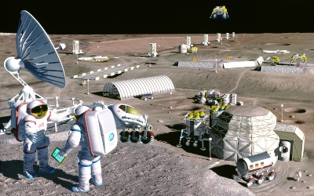
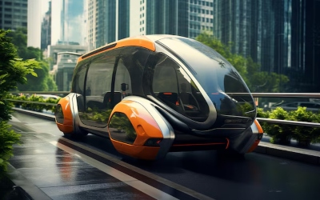

Futur
El futur de la tecnologia és emocionant i ple de possibilitats. A continuació, es mostren algunes tendències clau que poden definir el nostre futur:
Computació Quàntica
La computació quàntica promet revolucionar la manera com processsem la informació. Aquests ordinadors superpotents poden resoldre problemes complexos molt més ràpidament que els ordinadors clàssics.
Colonització Espacial
La colonització espacial podria ser una realitat en un futur no gaire llunyà. Amb empreses com SpaceX treballant en la possibilitat d'enviar humans a Mart i més enllà, el cosmos està a punt de convertir-se en el nostre proper horitzó.
Transport Sostenible
El transport sostenible està cridat a transformar la nostra manera de desplaçar-nos. Des de vehicles elèctrics fins a sistemes de transport públic intel·ligents, el futur de la mobilitat serà net i eficient.
